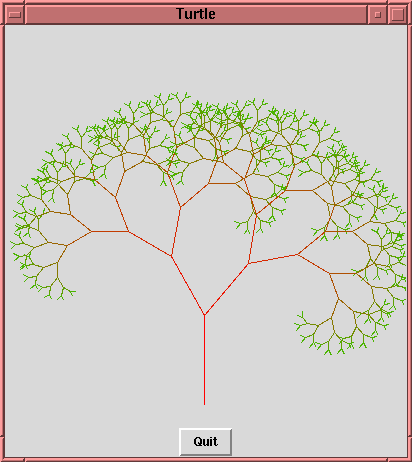
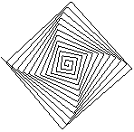

Assignment 1
Description
This lab assignment asks you to implement a library for so-called
turtle
graphics. The library will be interfaced to as an
embedded
language. Several extensions are then made to the original turtle
language.
We recommend that you implement the graphics part of the lab using
HGL, a simple
graphics library with just enough features for this assignment.
If you prefer (or if you plan on using 3D) you may use one of the
OpenGL libraries
or you may use
gtk2hs. If you would
like to use a different graphics library please ask before
starting the assignment.
Turtle Graphics
The idea of turtle graphics was originally part of the Logo programming
language. It originated from an environment where a real robot (the "turtle")
could move around and act on simple commands. The two basic commands it
understood were:
forward n
right d
Here,
n is the number of steps the robot should move
forward, and
d the number of degrees the robot should
turn. More information can be found on the
Turtle
graphics wikipedia page (or in a local copy of the
"Logo primer").
The idea is that you will implement a part of this turtle graphics language.
Your program will be able to produce something like the following output:

Below are a number of tasks. Needless to say, please read these
carefully and make sure you do not miss parts of an assignment! Most
assignments require coding and descriptions + motivations of
what you have done. Most of the descriptions should be in the form of
Haddock comments for modules
and fuctions. There are also several questions in this description, make
sure you answer all of them in your report.
Part I
Deadline: Wed Jan 28
The first part of this assignment is just to get you started. You should
get started on Part II before the deadline for Part I.
Part I - Task 1 - Free code!
Download and unpack this
stub cabal package.
The archive contains a file structure and some useful code snippets for you to build your
implementation on. You are free to modify the package however you wish or build a new
package from scratch, but if you deviate significantly from the structure in the stub file
you may want to explain why your version is an improvement.
Make sure "cabal configure", "cabal build" and "cabal haddock" works (switch the contents of the files to match the graphics framework you are using if not HGL).
Look through the contents of the package and the generated documentation, run the generated executable and make sure it works.
Fill in or replace the fields in the .cabal file with the appropriate information.
Familiarise yourself with the graphics library you are using by writing a
simple program which opens a window and draws something in it (the provided code
already does this for HGL, but make sure you understand how it is used).
Part I - Task 2 - Library interface
The turtle graphics language should be implemented as an embedded language
library in Haskell. The turtle language should be provided to the user as a
single module, exporting abstract datatypes and operations.
An important part of creating an embedded language is to think carefully
about what interface you want to offer to the user. Think about
compositionality (how easy is it to combine simpler programs to
build more complex ones?), and abstraction (hiding irrelevant
implementation details from the users).
For instance, your library might define and export the following things
(different types are conceivable, as long
as they implement the same basic functionality):
type Program
forward :: Double -> Program
right :: Double -> Program
...
Other turtle commands you should provide are:
penup and
pendown - stop drawing and start drawing respectively,
color - changes the color of the turtle's pen,
die -
"kills" the turtle (rendering it unable to perform any more actions),
idle - a program that does nothing,
limited - makes the turtle stop what it is doing after a specified period of time
(by some definition of time not directly related to minutes and
seconds),
lifespan - kills the turtle after a specified period of time,
backward and
left - self explanatory,
times - repeats a turtle program a certain number of times,
and
forever that repeats a program forever.
You will also need a sequencing operator (
>*>) to perform commands
one after another.
For running programs, in addition to the graphical interface your program
should provide a simple
textual interface that prints what happens in sequential order, i.e.
prints a description of the actions that the turtles perform at each "step"
in time (which lines are drawn, what action turtles perform or any other representation of what is going on will suffice).
The textual interface needs to be productive for infinite turtle
programs like those created with forever (it should go on printing the
actions indefinitely). The graphical interface only needs to handle
infinite programs for grades 4 or 5.
Write down the interface of your library, like in the example above,
listing the types you plan to export (you may sketch definitions for them, but
it is not needed for this part) and type
signatures for the operations. When appropriate add explanations of what
your operations are intended to do. Make sure you don't forget to add
at least one run function for your programs (the types of the
run functions may be a bit sketchy at this stage, but explain what each
of them do in their comments).
Part I - Task 3 - Example
Write down the
spiral example from Logo language
using your interface. In their syntax it looks like:

spiral 0 91
|
to spiral :size :angle
if :size > 100 [stop]
forward :size
right :angle
spiral :size + 2 :angle
end
|
You won't be able to run your spiral example yet, but it should type check.
Also, make one version of the spiral example that goes on forever. Can you
define the limited version in terms of the unlimited one?
Finally make a program that draws a finite spiral and when done starts drawing
an infinite spiral where the finite spiral ended.
Part II
Deadline: Wed Feb 4
In this part of the assignment you will implement your turtle language and
write a report.
Part II - Task 1 - Implementation
Implement the library you designed in Part I. Clearly separate primitive and
derived operations, and try to keep the set of primitive operations as small
as possible.
At this point you might realise that the interface you've designed is
missing some operations, or that parts of it are difficult to implement.
Don't hesitate to change the interface in these cases--just be clear about
what you changed and motivate why the change was needed (in your report or in
the documentation for the relevant functions).
Make sure that you carefully define the borders of your library by
exporting only the things you want a user to see (the interface you've designed).
Question: What definition of time do you use (what can a turtle achieve
in a single time unit)?
Part II - Task 2 - Parallel composition
Add a
parallel composition combinator to your turtle language.
One possible interface parallel composition could have is:
(<|>) :: Program -> Program -> Program
When you run a turtle program
p <|> q, there will be
two turtles, one running
p and the other running
q, in
parallel. In your textual interface you should show which actions occur
in parallel.
Questions: What happens after a parallel composition finishes? Is your
parallel composition commutative, is it associative? (To answer this
question you must first define what it means for programs to be equal.)
What happens if a turtle runs forever only turning left in parallel with
another turtle running the spiral example? Does your textual interface
handle this situation correctly, if not - how would you fix it?
Question: How does parallel composition interact with lifespan and limited?
(lifespan does not need to correspond realistically to actual life spans, just specify how it works.)
Part II - Task 3 - Additional operators
This task is required only for grade 4 or 5.
Add a new module TurtleExtras to your cabal package. This module should contain
some derived operators that you think may be a useful addition to the language.
Try to add higher level components like squares and other geometrical shapes as
well as operators that capture common patterns.
Operators that demonstrate the flexibility of your turtle language are encouraged.
See the grading page for more hints.
Part II - Task 4 - Examples
Implement a few examples that together use all of the constructs you have
implemented. (Do this in a different module that imports the module
defining the embedded language.) Make sure that you have at least one program
that does not terminate, and show that the textual interface can handle this.
Also choose your "favorite" turtle
program, resulting in a cool picture or animation. This program should
be the main function of your executable module, so building your cabal package
yields an executable that runs the program in graphical mode.
Part II - Task 5 - Thoughts and reflections
Answer the following questions:
- Start by answering all the questions in the Assignment description above.
- Did you use a shallow or a deep embedding, or a combination?
Why? Discuss in a detailed manner how you would have implemented
the Program type if you had chosen the other approach. What
would have been easier/more difficult?
- Compare the usability of your embedding against a custom-made
implementation of a turtle language with dedicated syntax and
interpreters. How easy is it to write programs in your embedded
language compared to a dedicated language? What are the
advantages and disadvantages of your embedding?
- Compare the ease of implementation of your embedding against a
custom-made implementation. How easy was it to implement the
language and extensions in your embedded language compared to a
dedicated language? What are the advantages/disadvantages of
your embedding?
- In what way have you used the following programming language
features: higher-order functions, laziness, polymorphism?
Required only for grade 5 (but helpful for grade 4):
Characterize the relationships between your operators as a set of algebraic laws.
For inspiration look at the laws of
algebraic semirings, also look at the laws for the
monoid typeclass and possibly other type classes like
Applicative/Alternative.
Also, consider the following:
- How does <|> and >*> interact?
- How does idle and die interact with your combinators?
- How does forever and times interact with your combinators?
- Can you find any law that is unexpected, unintuitive or undesired, but follows from your operators?
Question:Is your program data type a Monoid? Under which operations? There may be several possible Monoid instances. Would it be a Monoid if some small change was made to your operators?
Submission
Deadline
The deadline for the first part is Wed Jan 28 and the deadline for
the second part is Wed Feb 4. The final deadline is Sun Mar 22. (Please read
the rules
on what first and final deadline mean.) Each part of the assignment should
be submitted in its corresponding task in the
reporting system.
Clean Code
Before you submit your code, Clean It Up! Submitting clean code is Really
Important, and simply the polite thing to do. After you feel you are done, spend
some time on cleaning your code; make it simpler, remove unnecessary things,
etc. We will reject your solution if it is not clean. Clean code:
- Does not have long lines (< 80 characters)
- Has a consistent layout
- Has type signatures for all top-level functions
- Has good comments for all modules, functions, data types and instances. The comments should look good when compiled to HTML with Haddock.
- Has no junk (junk is unused code, commented code, unnecessary comments)
- Has no overly complicated function definitions
- Does not contain any repetitive code (copy-and-paste programming)
Submission
For part 1 the submission format is not so important, use the stub cabal package or
just submit one or two .hs files if you prefer - as long as they contain appropriate
commenting (you do not need to write any
functions except the example for the first part, just type signatures).
Make sure to answer the question asked in part one about defining the finite spiral using the
infinite one! Omitting
this is one of the few ways to fail on the first part.
For part 2 your submission needs to include the following:
- Your cabal package, containing your
solution. Use "cabal sdist" to generate the source tarball. Make sure the tarball
is working by extracting it in another directory and running "cabal configure",
"cabal build" and "cabal haddock" and checking that everything looks right.
- report.txt or report.pdf, a file containing documentation
of what you have done: Also give the motivations you were asked to give in
the assignments, answers to questions, and how to use your language.
Before you submit,
please read the note on cheating.
You are supposed to submit your solution using the Fire system.
Don't forget to submit when you have uploaded the files.
To the Fire System
Good luck!
![[Chalmers]](images/chalmers.gif)
![[GU]](images/gu.gif)
![[Print]](images/print.gif) Printable version
Printable version